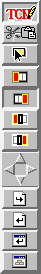
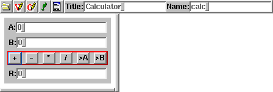
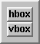
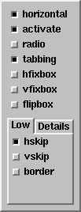
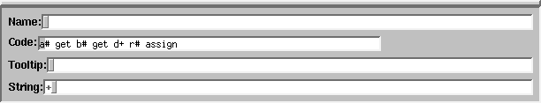

The menu bar contains a file menu, an edit menu and a help menu.

The widget bar contains groups of widgets. To insert a widget into
a dialog, select the group and click on a button. The corresponding
widget is inserted in the current position (affected by the mode
switches).
The editing modes are separated into four groups:
|  |
- Click modes:
- Edit mode: clicking opens the inspector of that object, with
focus on the text/code/name field (left/middle/right mouse button).
- Cut&Paste mode: clicking left cuts the object to the cut stack,
clicking middle or right pastes from the cut stack.
- Try mode: clicking makes the object react as in the dialog, but
without executing code.
- Insert modes:
- Add object first in current box
- Add object last in current box
- Add object before current box
- Add object after current box
- Navigation, selects the active box. Note that there is an active
widget (which you can select with the mouse pointer).
- Move one box up in hierarchy
- Move one box to the left/up
- Move one box to the right/down
- Move to the first child
- Short cuts:
- Load dialog
- Save dialog
- Try dialog
- Save as module
|

The dialog editor shows a navigation bar for each dialog to
edit. The dialog itself is resizable with the split bar below and on
the side, to see how it looks resized.
The navigation bar consists of an icon to open/hide the dialog, to
open/hide the declarations field, to open/hide the code field, to
select whether to show the dialog, a dialog menu, a dialog title and a
dialog name. It is important to give every dialog a name, since
dialogs without names can't be saved. The dialog name is the name of
the derived class, you can refer to this class in your code.
The declaration field contains variable and method declarations of
the dialog class.
The code field contains method definitions.
The dialog edit field itself contains the dialog itself.
|
 |
The box creator has two buttons to create horizontal and vertical
boxes. Boxes are simple layout managers, that arrange containing
objects one after the other. Boxes are created as normal objects, so
they go to the same places where a normal object would go. They
inherent the settings of the parent object, so these settings have to
be changed using the box inspector. |
The properties of the current box can be changed in the box inspector:
|
 |
- The horizontal switch changes the direction of the box
- The active switch changes the selection behavior: active
boxes contain one single active object, navigation with
tab is possible.
- The radio switch activates deselection on click, thus only
one switch inside such a box may be active at a time.
- The tabbing switch changes the layout: all objects except
glues in tabbed boxes have the same size.
- The hfixbox shrinks the box to the minimal size, no growing
is possible in horizontal direction
- The vfixbox shrinks the box to the minimal size, no growing
is possible in vertical direction
- The flipbox hides the box when active
- The hskip box or slider (with Details activated)
adds horizontal skips between objects
- The vskip box or slider (with Details activated)
adds vertical skips between objects
- The border box or slider (with Details activated)
adds a shadow to the box (raised or sunken).
|

The object inspector contains the informations of the current
object. The fields depend on the class of the object, however, some
fields are common between objects.
- The name field selects the name of the object, this
name is used in code to refer to this object
- The string field is the string the object displays
- The code field is the code that is executed on clicks
- The tooltip field is the tooltip that is shown when the
mouse is over the object (an empty string means no tooltip)
There are many other fields, for other properties of the widget.
Bernd Paysan,
1997-05-21, 1997-09-14